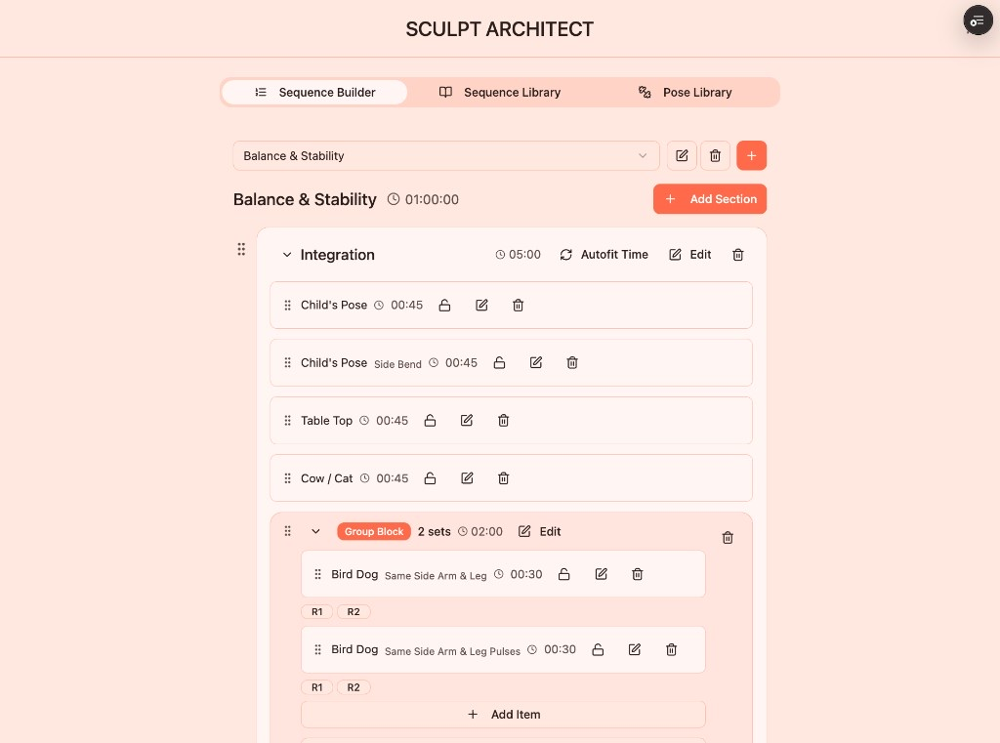
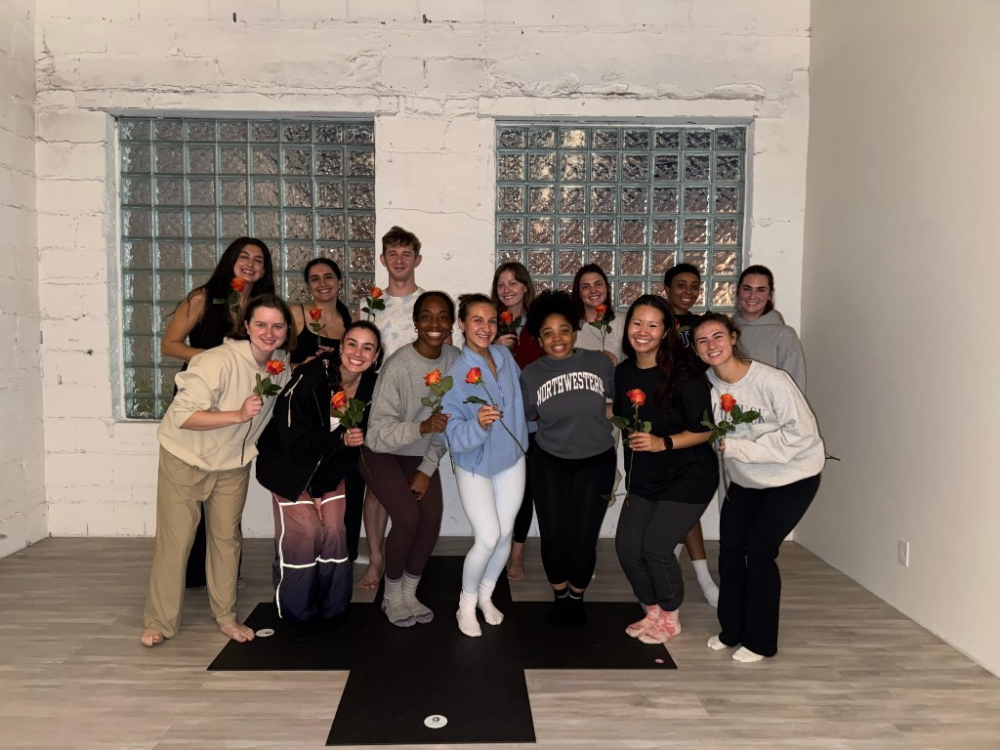
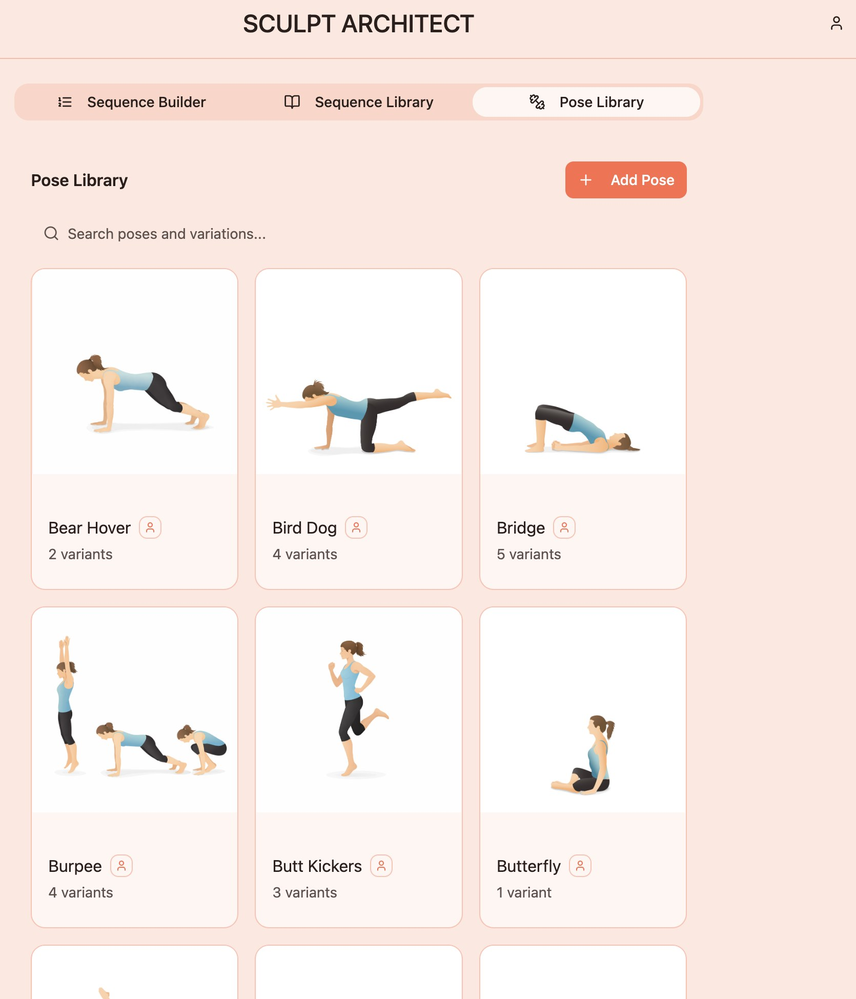
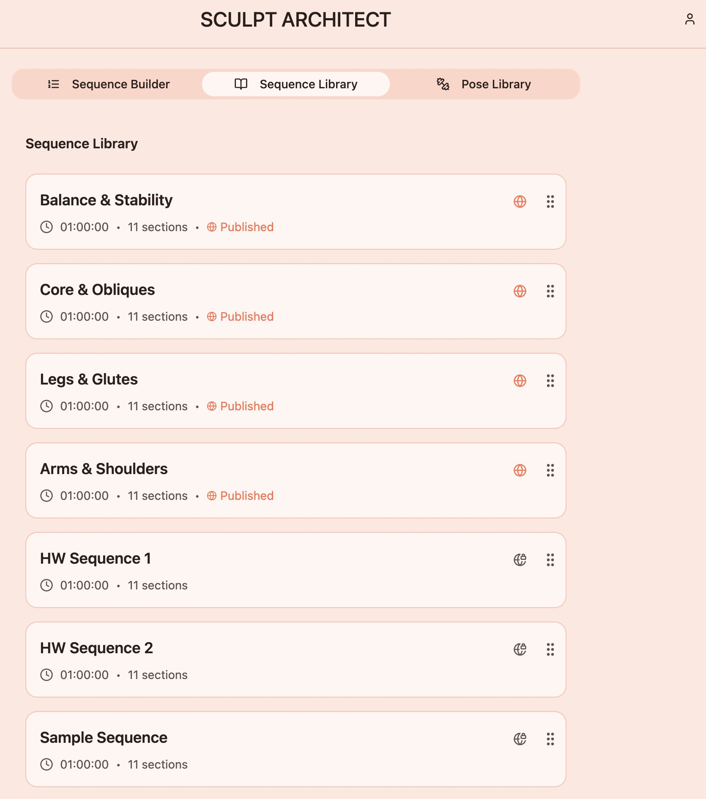
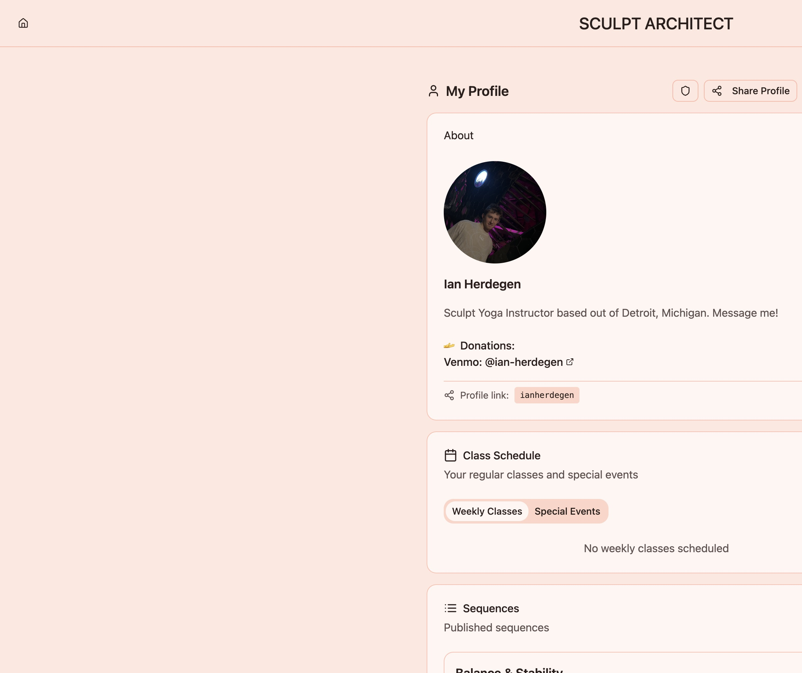
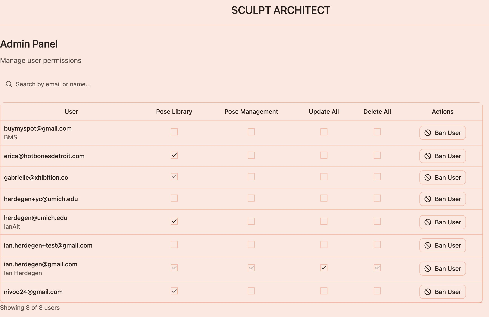

Class prep time cut — 3 hours → 1 hour
Hours saved per class planned
Solo product ownership from concept to live Vercel SaaS
Concept to live production
Core product surfaces in the instructor loop
Poses in the product catalog instructors build from
Admin permission scopes for multi-user control
Public share surfaces — sequences + profiles
Results
Instructors cut class prep from three hours to one. I owned the product end to end and shipped a full loop — build and share, with admin access control on top.
| Metric | Detail | Context |
|---|---|---|
| 67% | class-prep time cut vs notes/spreadsheets (3h → 1h) | Same class, two hours back |
| 2h | hours saved per class sequence built | Absolute time returned per class planned |
| 1→prod | End-to-end ownership: roadmap, UX, API, DB, deploy, admin | One owner from concept through production |
| 1 mo | Concept to live production | Delivery speed under solo ownership |
| 5 | Instructor surfaces: Builder, Pose Library, Sequence Library, Public Sequence, Public Profile + Schedule | A full instructor loop, not a single-screen prototype |
| 50+ | Pose catalog available for sequence composition | Enough poses to build a real class |
| 5 | Role permissions + ban controls in admin | Access control before the user base grows |
| 2 | Public share surfaces (sequences + profiles) with deep links | Sharing without standing up a separate site |
| Mig. | Migrated persistence from Supabase to Turso/libSQL | Backend database move |
Scale of the work
Core surfaces: Sequence Builder, Sequence Library, Pose Library, Public Sequence, Public Profile + Schedule, Admin.
The challenge
Instructors still plan classes in notes, spreadsheets, or memory — fine until you need reusable pose libraries, variations, and sequences you can actually share. Newer instructors also need a way to rehearse cues with a real clock and live transitional announcements, not a phone timer beside a written list. Sculpt Architect had to feel like a craft tool and still work as multi-user SaaS.
My approach
I owned information architecture, builder UX, auth, permissions, public surfaces, and the backend path — including migrating persistence from Supabase to Turso/libSQL. The builder carries sections, timed poses, and nested group blocks so instructors can plan a real class — not just a flat list.


What shipped
- Sequence Builder — sections, pose instances, group blocks, drag reorder, duration calculation, templates / clone
- Pose Library — 50+ poses and variations as first-class objects
- Sequence Library — browse and deep-link into saved work
- Public surfaces — shareable sequence URLs and public profiles with schedule editing
- Auth — magic-link verification plus credential login
- Admin console — user search, ban/unban, 5 permission toggles
- Assets — Vercel Blob uploads for poses and profiles
How the system works
React 18 + Vite + React Router front end. Hono API with JWT and bcrypt. Turso / libSQL data.
Hosted on Vercel (sculpt-sequences). Role-flag permissions so instructor and admin tooling share one product.
How the product works
After magic-link or credential sign-in, instructors move through five surfaces: build a timed sequence, pull from the pose catalog, find saved work in the sequence library, share a public sequence URL, and publish a profile with schedule. Separately, an admin panel controls user permissions and access — platform ops, not part of the instructor loop.
Surface 01 · Sequence Builder
Plan the class on a clock
Goal: design a timed sequence with sections and group blocks
Sequences start here — sections, pose instances, group blocks, drag reorder, and duration calculation. Templates and clone keep similar classes from being rebuilt from scratch.
Surface 02 · Pose Library
Reuse poses instead of rewriting them
Goal: build from a shared catalog of poses and variants
Poses and variations are their own saved objects — 50+ in the catalog — so instructors pull the same move into many sequences instead of typing it again for every class.

Surface 03 · Sequence Library
Find and reopen saved work
Goal: browse sequences and deep-link back into the builder
Finished plans land in the Sequence Library so instructors can return to last week’s flow, clone it, or jump straight into edit — not dig through notes and screenshots.

Surface 04 · Public Sequence
Teach on a timer from a share link
Goal: run the class from a public sequence URL
When a sequence is ready, a shareable URL turns the plan into a live runner: start, pause, and advance while each pose’s clock runs — so teaching stays on the floor, not split across a spreadsheet and a phone timer.

Surface 05 · Public Profile + Schedule
Carry the brand past a single sequence
Goal: a public profile with schedule, not a dead-end share link
Profile pages sit next to sequence URLs so a deep link can deepen into who teaches, when they teach, and how to find more of their work — without standing up a separate site.

Ops · Admin
Permissions without a side spreadsheet
Goal: control who can access what — separate from teaching
Outside the instructor loop: admin search, ban/unban, and five permission scopes for who can edit libraries, manage poses, and stay on the platform — so access control does not live in a spreadsheet as the user base grows.

Reflection
What mattered was shipping a complete instructor loop — auth, builder, libraries, and share — with admin permissions as a separate ops layer so real classes could run in one product, not a pile of half-finished screens.